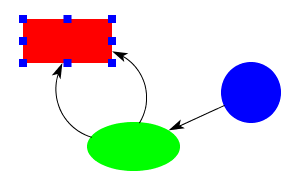

Class: ArcTutorial

This tutorial illustrates how to use ArcConnectors. In this example, the connectors are attached to "perimeter sites" -- that is, sites that can relocated themselves to maintain themselves on the perimeter of an object. Unlike the first connector example, this one does not need to create a special kind of figure, as perimeter sites can attach to any figure.
The code to create the connectors and set up the interaction is much the same as the previous tutorial, except that it uses ArcConnectors instead of StraightConnectors. One noticable difference is that the connector target uses an off-the-shelf class provided with the Diva canvas:
ConnectorTarget target = new PerimeterTarget();A second difference is that the initialization of the manipulators is more complicated. Because there are two different kinds of connectors, and we want different manipulators for each, we use an instance of the TypedDecorator class to set this up:
ConnectorManipulator cManipulator = new ConnectorManipulator();
cManipulator.setSnapHalo(4.0);
cManipulator.setConnectorTarget(target);
ArcManipulator aManipulator = new ArcManipulator();
aManipulator.setSnapHalo(4.0);
aManipulator.setConnectorTarget(target);
TypedDecorator typedDecorator = new TypedDecorator();
typedDecorator.addDecorator(StraightConnector.class, cManipulator);
typedDecorator.addDecorator(ArcConnector.class, aManipulator);
A different way to get the same effect would be to use two different
SelectionInteractors, one for the arcs with an ArcManipulator and one
for the StraightConnectors with a ConnectorManipulator.
(Currently, the ArcManipulator looks the same as the
ConnectorManipulator, but in the near future it will have additional
grab-handles for reshaping the arc.)